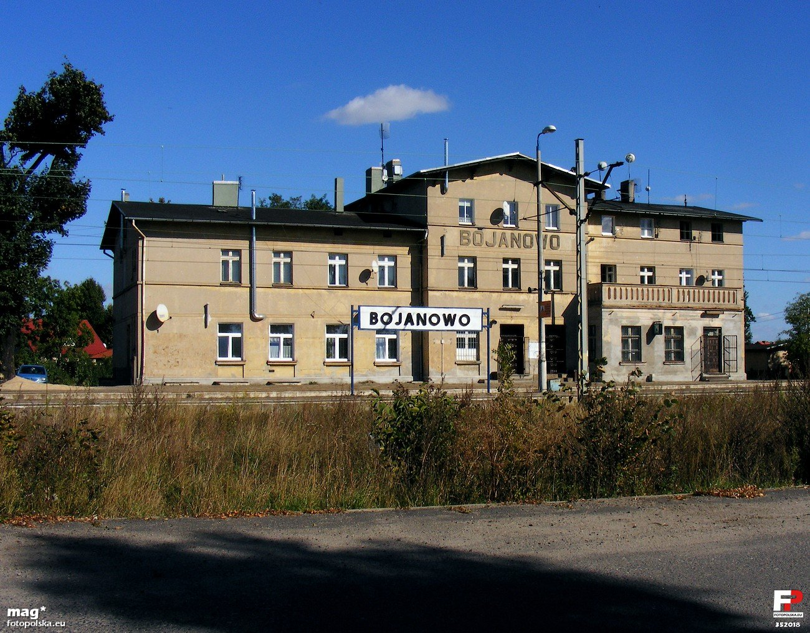
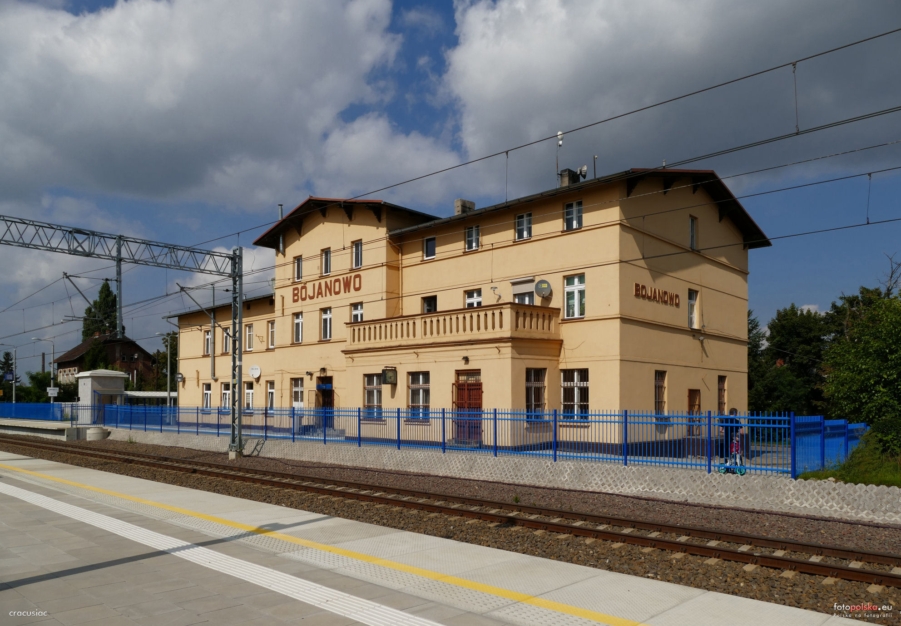
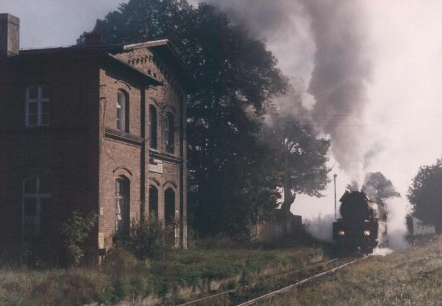
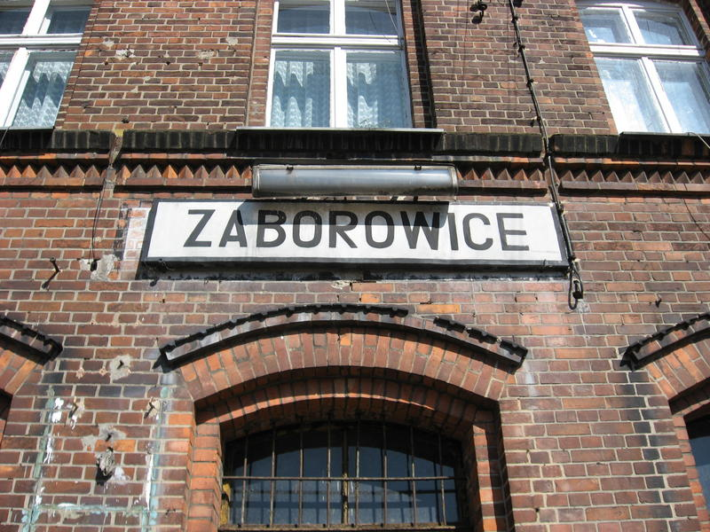
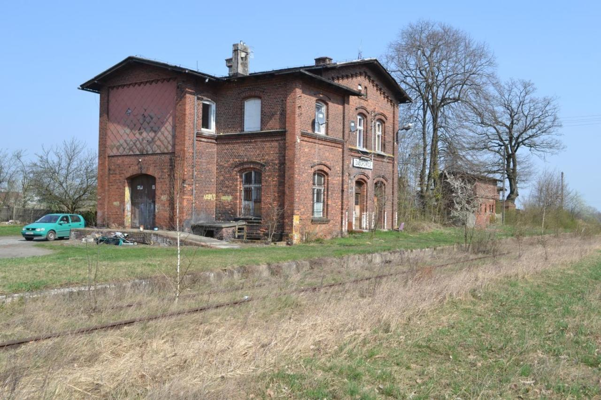

Legenda
Stacja funkcjonuje
Tory nieprzejezdne
Tory rozebrane
Pociąg specjalny
Ostatni pociąg
Zdjęcia nie związane ze stacjami
Opis / Historia linii
Jej początek był umieszczony w Bojanowie (0.000km), a jej koniec znajdował się w Odrzycku (50.028km). Na całej długości linii znajdowało się 15 stacji/przystanków kolejowych. Pierwszym z nich była stacja w Bojanowie (0.000km), następną z nich są Zaborowice (5.350km), Borszyn Wielki (8,575km), Borszyn Mały (10,852km), Góra Śląska (15.188km), Sławęcice Górowskie (18,281km), Strumienna (20,274km), Narratów (24,504km), Niechlów (29.482km), Dryżyna (36.050km), Szlichtyngowa (38.442km), Wilków Głogowski (41.428km), Serby Wschód (46.079km), Serby Zachód (48.867km), Odrzycko (50.028km).
Linia ta jest linią jednotorową. Otwarcie ruchu na odcinku Bojanowo - Góra Śląska nastąpił 14 grudnia 1885r, następnym odcinkiem był od Odrzycko - Szlichtyngowa 1 lipca 1907r, dalej trzeba było połączyć ze sobą te dwa odcinki Góra Śląska - Szlichtyngowa i jej otwarcie nastąpiło 3 miesiące później 1 października 1907r.W okresie międzywojennym (17 styczeń 1920) na odcinku Bojanowo - Zaborowice ruch był wstrzymany, ponieważ przechodziła tam granica państwa. Ponowne otwarcie ruchu na tym odcinku był w 1939r. W październiku 1991r nastąpiło zamknięcie ruchu pasażerskiego na całym odcinku od Bojanowa do Odrzycka. Ruch towarowy na odcinku Niechlów - Szlichtyngowa został zamknięty na początku roku 1992. Koniec tego roku też przyniósł zamknięcie ruchu towarowego Szlichtyngowa - Odrzycko. W 2000r nastąpiła kradzież torów między Niechlowem a Odrzyckiem. W tym samym roku jeszcze został zamknięty ruch towarowy między Górą a Niechlowem. 23 styczeń 2002r to była data o podjęciu, że odcinek Góra Śląska - Odrzycko będzie zlikwidowany. 2 września 2004r torowisko na odcinku Szlichtyngowa - Odrzycko zostało rozebrane. W 2005r nastąpiła kradzież kilku metrów toru w Sławęcicach między stacją a przejazdem kolejowym. W maju 2006r odcinek Góra Śląska - Odrzycko rozebrano. Rok 2011 a dokładnie 12 grudnia 2011r nastąpiło zamknięcie ruchu na ostatnim odcinku Bojanowo - Góra Śląska. Następnego dnia na szerokości budowanej drogi S5 torowisko zostało rozebrane.
----
{kind=link}

A poniżej film i zdjęcia.

Zdjęcia zostały wykonane między stacjami Góra Śląska a Borszyn Mały

Zdjęcia zostały wykonane między stacjami Strumienna a Narratów

Bojanowo znajduje się w województwie Wielkopolskim w powiecie Rawickim. W 2017 roku obsługowała 300-499 pasażerów na dobę. Otwarcie nastąpiło w 1856 roku. Na stacji są 2 perony i 3 krawędzie peronowe, semafory są świetlne. Stacja znajduje się na 75.311 km lini kolejowej nr 271 Wrocław Główny - Poznań Główny. Zatrzymują się tutaj tylko pociągi regionalne jadące w kierunku Poznań Główny lub Wrocław Główny.

1914r.

2012r.

2021r.
Zaborowice są położone w województwie Wielkopolskim, w powiecie Rawickim. Znajdują się na 5.350 km linii. Stacja posiada 1 peron a otwarcie nastąpiło w 1885 roku. Na początku nazywała się Saborwitz i była stacją (ST) w 1940r. zmieniono nazwę na Waffendorf a 5 lat później w 1945r. na Zaborowice wtedy też zmieniła się stacja na przystanek i ładownia (LPO), przed 1990r. jako przystanek (PO) w 1992r przystanek (PO) był już nieczynny.
{kind=link}
1910-1925r.

2001r.
Parowóz Ol49-59 prowadzi pociąg specjalny relacji Leszno - Bojanowo - Sławęcice Górowskie - Bojanowo - Leszno - Wolsztyn

2008r.

2017r.
Borszyn Wielki położony jest na Dolnym Śląsku w powiecie Górowskim. Przysanek był oddalony od wsi około 700 metrów a znajdował się na 8.575 km linii. Posiada on 1 peron, otwarto go w 1885r. i nazywał się Heinzebortschen w późniejszym czasie w 1905r. stał się przystanekiem i ładownią (LPO) przed 1940r była zmiana nazwy na Nordingen. Po 1945r. była kolejna zmiana nazwy na Boryszyn Polski a ostatecznie na Borszyn Wielki zmieniono w 1947r. Przed 1990r. znowu był to przystanek (PO) a po 1992r. przystanek (PO) został nieczynny.


2011r.


2013r.
Borszyn Mały położony jest na Dolnym Śląsku w powiecie Górowskim. Przysanek był oddalony od wsi około 300 metrów a znajdował się na 10.852 km linii. Posiada on 1 peron, otwarto go w 1885r. Od samego początku był to przystanek i ładownia (LPO) i nazywał się Kalteborschen, przed 1940r. była zmiana na Grandingen, a po 1945r. na Boryszyn Zimny a ostatecznie na Borszyn Mały w 1947r. Przed 1990r. był już to tylko przystanek (PO) a po 1992r. nieczynny już był.


2011r.


2013r.

2017r.


2022r.
Stacja Góra Śląska leży na Dolnym Śląsku w powiecie Górowskim. Stacja znajduje się przy ulicy Dworcowej 34. Posiada ona 2 perony, 9 torów, 2 place załadunkowe, lokomotywownie 4 stanowiskową (aktualnie brak dojazdu do środka tor ucięty, brak obrotnicy). Tory nr 10, 8, 6 też zostały ucięte w okolicy "Gs1". Znajdowały się 4 semafory kształtowe wyjazdowe i 2 wjazdowy


SM31-131 2002r.


11.12.2006r.

25.04.2009r.

03.05.2010r.


SM31-158 i SM42-1017 w 2011r.


Sierpień 2012r.


2015r.

Data nieznana.


Data nieznana.
{kind=link}
{kind=link}

13.03.2023r.
{kind=link}

Ąż dziwne że dalej jeszcze stoi pomimo tylu lat od rozebrania linii
Wskaźnik W 9 „Wskaźnik odcinka ograniczonej prędkości” – wskaźnik kolejowy w Polsce oznaczający początek lub koniec odcinka przez który należy przejeżdżać ze zmniejszoną prędkością pociągu.
13.03.2023r.
Nasyp w kierunku Niechlowa
22.04.2023r.
{kind=link}
Zdjęcia wykonane przed wjazdem na stację Niechlów od Dryżyny
Ledwo co utrzymuje się jeszcze słupek z 30,2 km
Tutaj musiał być słupek hektometryczny ale niestety go już niema
Plac załadunkowy

Miejsce gdzie był peron i dworzec i dobrze zachowany słupek hektometryczny


Zakłady Ziemniaczane Niechlów
Słupek z oznaczeniem 29 km za zakładami ziemniaczanymi
Słupek z oznaczeniem 28,8 km w kierunku Naratowa
22.04.2023r.
{kind=link}
Zdjęcia 2 wiaduktów które znajdowały się nad torami w Dryżynie

22.04.2023r.
{kind=link}
Budynek dworca Szlichtyngowa
W tym miejscu znajdował się przejazd kolejowy

22.04.2023r.